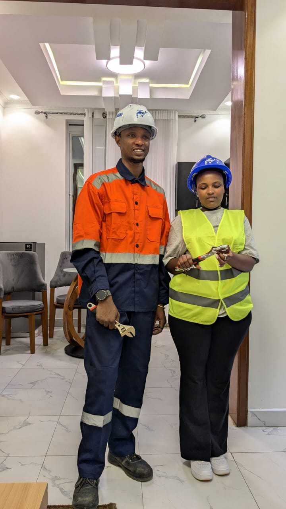
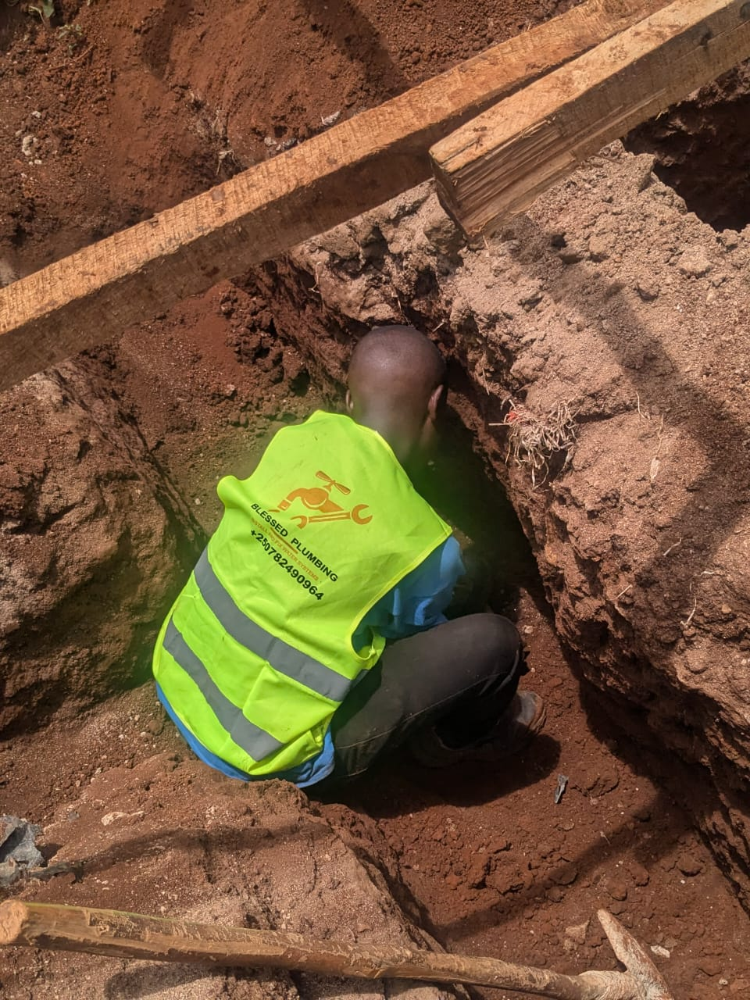

Hands-on project oversight, quality assurance, contractor coordination, and reporting for smoother delivery and better site control.

We keep construction and installation work aligned with drawings, quality standards, and project timelines.

Regular on-site inspections to verify work progress, identify risks early, and keep the project moving according to plan.

Detailed checks for workmanship, materials, and installation standards to help deliver a clean and durable final result.
Clear coordination between trades, suppliers, and contractors to reduce delays and avoid avoidable site conflicts.
Practical progress updates, issue tracking, and recommendations that help clients stay informed and make timely decisions.
We combine technical oversight with practical communication to keep each site organized and accountable.
We spot issues early, document them clearly, and help teams correct them before they become costly problems.
Our supervision approach is grounded in hands-on site knowledge across engineering, plumbing, and building work.
We track milestones closely so site activity stays aligned with agreed deadlines and delivery expectations.
Clients get straightforward updates, transparent reporting, and practical feedback throughout the project lifecycle.
A snapshot of the kind of on-site coordination and oversight we provide for active projects.

Feedback from project owners and contractors who needed reliable on-site oversight.
"Their supervision kept our site organized and helped us avoid delays. The reporting was clear and the follow-up was consistent."

"They coordinated trades properly, tracked progress well, and gave us the confidence that the work was being handled professionally."

Common questions about how we manage and report on site work.
Contact our team today for reliable on-site oversight, progress reporting, and quality control support.